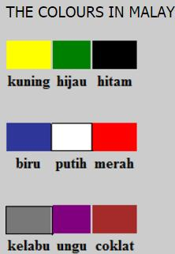
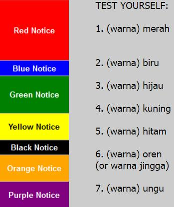
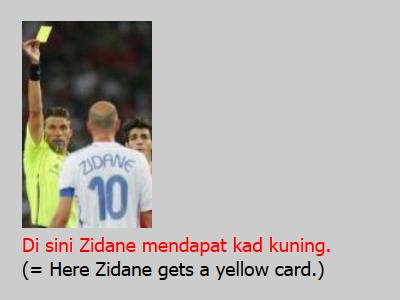
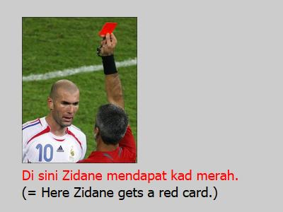

kuning = yellow
hijau = green
hitam = black
biru = blue
putih = white
merah = red
kelabu = gray
ungu = purple
coklat = brown
Click to listen to the Malay sentences.
A second reading (by Michelle Nor Ismat, a native speaker)
|
|
| My car is blue. | Kereta saya biru. |
| What is the colour of your car?* | Apa warna kereta anda?* |
| Vocabulary
kuning = yellow hijau = green hitam = black biru = blue putih = white merah = red kelabu = gray ungu = purple coklat = brown |
|
*The above question only serves to put the study of colours in a meaningful context. If, like me, you don't possess a car, there's nothing to be ashamed about! In that case just answer Saya tidak ada kereta or if you want to add a touch of regret, or perhaps just to impress the listener with your Malay then say Ah, malangnya saya tidak mempunyai kereta (Ah, unfortunately I don't have a car). Note the four syllables in mempunyai (pronounced mem-pu-nya-ee) which simply means to own or possess.
NOTE: Just as the days of the week usually start with hari and the months of the year with bulan, the names of colours are usually preceded by the word warna meaning "colour" eg warna biru for "blue" and warna kuning for "yellow".



To say that a colour is dark all you have to do is to put the adjective tua (literally "old") after it. The adjective always comes after the noun in Malay, remember? Example:
dark red = merah tua
dark blue = biru tua
dark yellow = kuning tua
dark green = hijau tua
Similarly to say that a colour is light all you have to do is to put the adjective muda (literally "young") after it. Example:
light green = hijau muda
light blue = biru muda
light yellow = kuning muda
light red = merah muda
By the way the Malay word for "pink" is also merah muda or merah jambu, "jambu" ("guava" or "rose apple" in English) being the name of a Malaysian fruit that is pink in colour (on the outside at least). As the rose colour is close to pink it is also called merah jambu in Malay.
At times you might want to say that something has the tinge, hue or shade of a certain colour (eg. reddish, yellowish, greenish, bluish, etc). It's quite simple to do this in Malay. Just add the prefix ke to the colour, repeat the colour then add the suffix an to it. Thus:
reddish = kemerah-merahan
yellowish = kekuning-kuningan
greenish = kehijau-hijauan
bluish = kebiru-biruan
Just as coklat takes its name from the colour of chocolate, the same is true for oren, which takes its name from the colour of orange. There is another word for this colour though and that is jingga.
Apart from coklat there is another word for "brown" in Malay and that is the word perang (pronounced as pay-rang). If you are heavily suntanned you would be described as perang though if the word is used for hair it would mean "fair-haired" or blond rather than brown. But as chocolate itself is brown in colour I have used the word coklat but if you prefer the word perang make sure you pronounce it as pay-rang (if you know French it will help your pronunciation to see it spelt as pérang). Unfortunately in Malay you don't have the é to help you with the pronunciation and the same word perang, if it is pronounced pərang (pə has the schwa vowel sound ə as in "per cent") means "war" . So watch out, if you are not going to start a war, pronounce the word for "brown" as pay-rang and not pərang. But why take the risk when you can use coklat for the brown colour?
As for gray, which is the background colour of all the pages in this website, the Malay word for it is kelabu.


Orang putih means a person of the white race (see Lesson 4). It's not really pejorative or insulting, I can assure you. The Indonesians make it even clearer by saying orang kulit putih meaning a person with white skin (kulit meaning "skin"). There is another word often used in Malaysian conversation for a Caucasian and that is mat salih (again it has no pejorative connotation). On a more formal level the term orang Barat (meaning "Westerners") is used. While on the subject, the word for a "foreigner" (i.e. anyone who is not a Malaysian) is orang asing (asing meaning "foreign").
Lukisan ini adalah karya Ellsworth Kelly dan dipaparkan di Museum of Modern Art di Paris. Bolehkah anda sebutkan nama warna-warna yang terdapat di atas lukisan?
With more and more Africans, especially from Nigeria, making their presence felt in Malaysia (a recent phenomenon), a popular and simplistic term to refer to them is Pak Hitam (or Awang Hitam), hitam being the Malay word for black, as you have learnt above. (See: "Malaysia's Welcome Wears Thin" by Tash Aw in International New York Times) You will be advised though to use the politically correct word, which is orang Africa, whether you are in Malaysia or Indonesia.
More Exercises: Can you name the colours in the flags below?
The Malay word for "flag" is bendera (pronounced as burn-day-ra). If it helps for the pronunciation think of this sentence: The day they burned the flag. The names of the countries have already been dealt with in Lesson 4, remember? All the questions below start with "Warna apa" but you can just as well start by asking "Apa" (a slight pause) followed by "warna". Unlike a few other languages Malay is very flexible in this respect.

Warna apa yang terdapat dalam bendera negara Perancis?
(What colours are found in the French flag?)
Warna apa yang terdapat dalam bendera negara Jerman?
(What colours are found in the German flag?)
Warna apa yang terdapat dalam bendera negara Rusia?
(What colours are found in the Russian flag?)
Warna apa yang terdapat dalam bendera negara Itali?
(What colours are found in the Italian flag?)
Warna apa yang terdapat dalam bendera negara Belanda?
(What colours are found in the Dutch flag?)
Warna apa yang terdapat dalam bendera negara Lithuania?
(What colours are found in the Lithuanian flag?)
Warna apa yang terdapat dalam bendera negara England?
(What colours are found in the English flag?)
Warna apa yang terdapat dalam bendera negara Amerika (Syarikat)?
(What colours are found in the American flag?)
Warna apa yang terdapat dalam bendera negara Malaysia?
(What colours are found in the Malaysian flag?)
Warna apa yang terdapat dalam bendera negara Sepanyol?
(What colours are found in the Spanish flag?)
A short conversation in Malay
Saya suka payung yang kuning itu.
Dan anda? Anda suka payung yang mana?
Saya suka payung yang merah.
Saya suka payung yang biru.
Translation:
I like that yellow umbrella. (lit. I like the umbrella that is yellow.)
And you. Which umbrella do you like?
I like the red umbrella. (lit. I like the umbrella that is red.)
I like the blue umbrella. (lit. I like the umbrella that is blue.)


Translation: This painting is the work of Ellsworth Kelly and is displayed at the Museum of Modern Art in Paris. Can you name the colors that appear in the painting?